Spojenci
Aliance
Spojenci ve druhé světové válce byla koalice mocností válčících během druhé světové války proti mocnostem Osy. Jinak byly nazývány Spojené národy podle mezinárodní organizace založené po válce. Na začátku války, 1. září 1939, se spojenci skládali z Francie, Polska a Spojeného království a jejich současných, nebo dřívějších kolonií. Ke spojencům se po zahájení německé invaze do severní Evropy připojily Nizozemsko, Belgie, Řecko a Jugoslávie. Poté, co byl Sovětský svaz napaden Německem, mu byla nabídnuta vojenská pomoc od Spojeného království. Spojené státy po celou dobu poskytovaly Spojencům válečný materiál a peníze a oficiálně se připojily v prosinci 1941 po japonském útoku na Pearl Harbor. Čína již dříve byla ve válce s Japonskem od incidentu na mostě Marca Pola v roce 1937, ale oficiálně se připojila ke Spojencům až v roce 1941.
Polsko a Francie
Polsko
Začátek války
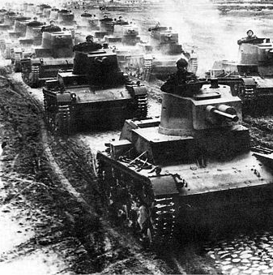Již v předchozích dnech provedli Němci několik fingovaných provokací. Iinvaze do Polska byla zahájena bombardováním města Wieluń. Německá Luftwaffe ihned poté zaútočila proti polským vojenským a komunikačním cílům.
Rychle se pohybující německé pancéřové a motorizované divize vyrazily vstříc Varšavě a Brestu. Západní novináři použili k popisu tohoto nového způsobu vedení boje termínu Blitzkrieg („blesková válka“). Mezi 8. až 10. září se Němci přiblížili ze severu a jihu k Varšavě.
17. září překročila sovětská Rudá armáda polské východní hranice. Po dalších jedenácti dnech bojů a intenzivního dělostřeleckého a leteckého bombardování obležené polské hlavní město kapitulovalo. V té době byla prakticky celá země v rukou Němců a Sovětů, pouze izolované kapsy vytrvávaly v odporu, jenž trval do 6. října.
Po završení bojů si Němci a Sověti rozdělili svoji kořist: západní území Polska byla začleněna do Říše, zatímco východní Polsko se stalo součástí Sovětského svazu.
Francie
Blitzkrieg
10. května 1940 vypukla bitva o Francii. Na východě německá skupina armád B napadla a porazila Nizozemsko a postupovala na západ přes Belgii. Vrchní velitel spojenců, francouzský generál Maurice Gamelin,realizoval Plán D, který byl zaměřen na Maginotovu linii opevnění.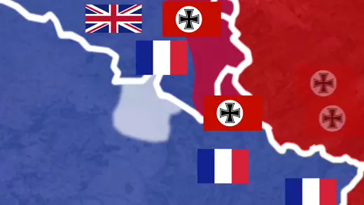 14. května německá skupina armád A prorazila v úseku Arden a rychle postupovala na západ k Sedanu, poté se otočila severně k Lamanšskému průlivu, což Generalfeldmarschall Erich von Manstein nazval „srpový sek“ (známý Žlutý plán, Mansteinův plán), v důsledku čehož obklíčil spojenecké síly. Bitva u Dunkerque proběhla u Dunkerque mezi 24. květnem a 4. červnem 1940. Během bitvy došlo k evakuaci britských a spojeneckých vojsk z Francie.
Operace dynamo
Operace Dynamo byla hromadná evakuace spojeneckých vojáků z pláží a přístavu v Dunkerque ve Francii, která proběhla mezi 27. květnem a 4. červnem roku 1940. Poté, co v bitvě u Dunkerque byly britské, francouzské a belgické jednotky obklíčeny německou armádou, byla 26. května nařízena evakuace.
Afrika
Boje v Libyjské poušti
Italské tažení
13. září 1940 zahájila Italská vojska útok na Egypt s cílem ovládnout Suezský průplav. Velitelem italské ofenzívy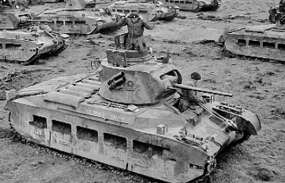 byl maršál Rodolfo Graziani. Jelikož se Velká Británie roku 1936 zavázala k obraně Egypta, Britové pod vedením generála Wavella zahájili rozsáhlou ofenzivu, při níž 11. prosince znovudobyly Egyptské Sídí el-Barrání. 22. ledna 1941 dobyly kyrénský Tobrúk. 8. února 1941 selhal u El Agheily poslední pokus o zvrácení Britského postupu. Britské síly zničily 10. italskou armádu a zajaly 130 000 zajatců.
Itálie na drtivou porážku reagovala vysláním obrněných motorizovaných jednotek do Afriky. Maršál Graziani musel rezignovat, novým velitelem italských vojsk se stal Italo Gariboldi.
Němci do Afriky vyslali expedičního sbor Afrikakorps pod vedením generála Erwina Rommela, jehož cílem bylo zabránit vytlačení Italů z oblasti.
Německá pomoc
14. února se začaly vyloďovat německé jednotky v Tripolisu. 26. dubna se německo-italské vojsko přiblížilo k Egyptu a započalo obléhat přístav Tobrúk. Na základě německých úspěchů byl z velení odvolán generál Wavell a na jeho místo byl 30. června 1941 jmenován generál Claude Auchinleck.
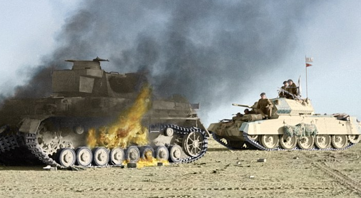Britové se pokusili obležený Tobrúk, který bránili Australané, z obležení vyprostit. Tato operace byla pojmenována Battleaxe započala 15. června a skončila neúspěšně. Druhý pokus o uvolnění obležení Tobrúku nazvaný Operace Crusader dosáhl dne 10. prosince úspěchu.
26. prosince spojenci opět obsadili Benghází a Rommelův ústup se zastavil u El Agheily. Během následné ofenzivy Rommel 29. ledna 1942 obsadil Benghází a 7. února se zastavil u El Gazaly. Dne 26. května zahájil Rommel další ofenzívu, prorazil britské obranné postavení u El Gazaly a 10. června dobyl Bir Hacheim a 21. června dobyl Tobrúk.
Poté britské jednotky začaly ustupovat, 28. června porazil Rommel Brity u Marsá Matrúh. Na nedostatek paliva, munice a vyčerpáním zásob ukořistěné v Tobrúku ho donutil zastavit 30. června na britské linii u El Alameinu. Zde se pokusil prorazit britskou obranu, ale jeho útok byl 3. července 1942 odražen a jeho vojska se od 2. do 27. července brání britským protiútokům.
Rommel neuspěl ani později, v bitvě u Alam Halfy. Pro neúspěchy s protiofenzívou byl 18. srpna 1942 z funkce vrchního velitele britských vojsk na středním východě odvolán Claude Auchinleck. Novým velitelem v Africe se stal generál Bernard Montgomery. Dne 19. října 1942 zahájili Britové útok u El Alameinu, kde 23. října prorazili německé postavení a Rommel ustoupil do Tunisu.
Operace Torch
Amerika se přidává
Vylodění Spojenců v Francouzském Alžírsku 8. listopadu pod velením Dwighta Eisenhowera zkomplikovalo strategickou situaci německo-italských sil. Při tomto vylodění se do války zapojily i vojenské jednotky vichistické Francie a to jak na straně německých vojsk v Oranu a Maroku, tak na straně spojenců, kam přešel admirál François Darlan.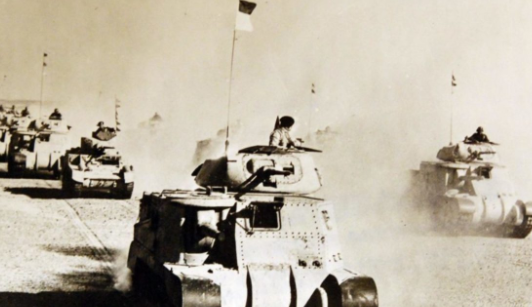 Ohledně Darlana vznikla celá řada problémů, neboť se prohlásil za šéfa státu Francouzské severní Afriky a 6. prosince s ním generál Eisenhower podepsal smlouvu o správě francouzských území v Africe, která ukončila odpor Francouzů v Maroku a Oranů. A ve svém důsledku vedla také k obsazení Vichistické Francie německými vojsky. Již 24. prosince 1942 byl na Darlana spáchán úspěšný atentát a jeho funkci převzal generál Henri-Honoré Giraud.
Konec bitev v Africe
Britové i Američani pokračovali v náporu na německé pozice . Již 17. ledna obnovila 8. armáda svoji ofenzívu v Libyi, 23. ledna 1943 Britové obsadili Tripolis a 8. února se dostali na Tuniské hranice. Dne 25. února zahájil Rommel ofenzívu, která byla přes počáteční úspěchy 28. února zastavena. Dne 9. března 1943 byl Erwin Rommel pro neshody s Hitlerem o dalším postupu poslán na měsíční dovolenou, novým velitelem se stal generál Hans-Jürgen Arnim. Dne 27. března Britové prolomili Marethskou linii, 24. dubna začala spojenecká ofenziva v Tunisku. Po útoku na Tunisko kapitulovaly (13. května 1943) poslední německo-italské jednotky.
Letecká bitva o Británii
Letecké bitvy
Začátky leteckých bitev
Letecký průmysl dodával dostatek kvalitních letounů Spitfire a Hurricane, problém byl s piloty. Proto byli intenzívně přeškolováni zahraniční piloti.
Významnou posilou byli i piloti, kteří uprchli z Protektorátu Čechy a Morava. Nejúspěšnějším československým letcem v bitvě o Anglii se stal Josef František, který měl potvrzeno 17 zničených nepřátelských letounů.
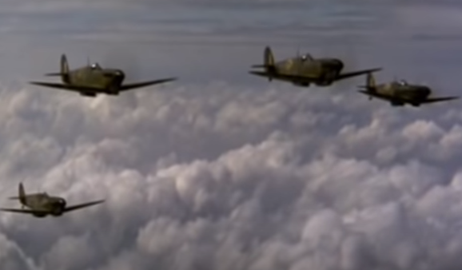V měsíci září začalo docházet k postupnému obratu ve válce o Anglii. Dne 4. září 1940 hrozil Hitler ve Sportovním paláci v Berlíně Velké Británii barbarskými leteckými útoky. Den poté nařídil, první masový letecký útok na Londýn. Toho dne přijel do Calais velitel Luftwaffe Hermann Göring, aby osobně řídil útoky německého letectva proti Velké Británii. Útoky na britské hlavní město pokračovaly prakticky až do 13. listopadu 1940. Němečtí pohlaváři se domnívali, že bombardováním zničí morálku obyvatelstva, což přispěje k britské kapitulaci.
Bombardování Londýna však paradoxně přispělo ke zlepšení RAF. Britský letecký maršál Trafford Leigh-Mallory, který přišel s nápadem "velkých křídel," tak mohl svoji taktiku soustřeďování perutí RAF dovést k ještě větší dokonalosti. Dne 15. září podnikla Luftwaffe na Londýn masivní nálet, který měl zlomit britský odpor. V ten den mělo RAF k disposici celkem 581 Spitfirů a Hurricanů. I stíhací složka Luftwaffe v dosavadních bojích utrpěla značné ztráty
15. září však RAF dokázala soustředit veškeré své síly. Britskému velitelství stíhacího letectva se podařilo poprvé použít proti nepříteli všechny tři stíhací skupiny současně. Celý den probíhaly tvrdé boje, při nichž RAF způsobila ztrátu padesáti šesti letounů Luftwaffe.
Britské vítezství
V následujících dnech intenzita bojů polevila. 17. září vydalo německé vrchní velení rozkaz, že operace Seelöwe (invaze do Velké Británie) se odkládá na neurčito. Dne 19. září nařídilo německé velení letectva zesílit útoky na britské zásobovací pozice a zařízení. Velitelé 2. a 3. německé letecké armády obdrželi rozkaz bombardovat zejména britské přístavy a zaminovávat je. 7. listopadu vydal maršál Göring rozkaz k provedení mohutných úderů na města Liverpool, Birmingham a Coventry. Posledně jmenované město bylo dne 14. listopadu plošně vybombardováno. Bombardování Velké Británie probíhalo již v menší intenzitě prakticky až do jarních měsíců roku 1941. Posledním velkým vzepětím Luftwaffe byl noční nálet z 10. května 1941, který velmi tvrdě postihl Londýn.
Pomoc z okupovaného území
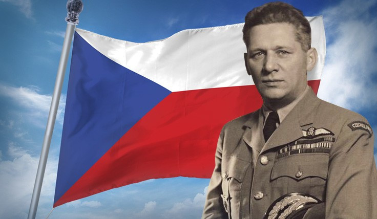Dobrovolníci
Kromě britských pilotů RAF a FAA se bitvy o Británii na britské straně účastnili též piloti z mnoha zemí světa. Nejpočetnější skupinu zahraničních pilotů tvořili Poláci. Druhou nejpočetnější národností se stali Novozélanďané a na třetím místě v počtu účastníků bitvy byli Kanaďané . Velmi významnou složku tvořili také českoslovenští piloti, jejichž skupina byla co do počtu účastníků bitvy na čtvrtém místě. Společně s Poláky patřili k elitním pilotům. Dle různých zdrojů se bitvy o Británii účastnilo 84–93 československých pilotů, z nichž velká většina pocházela z českých zemí. Dále se bojů zapojili v počtech řádu desítek piloti z Belgie, Austrálie, Jižní Afriky, Irska, v menší míře pak také piloti Francie, USA, Jamajky, Palestiny, Newfoundlandu, Cejlonu a Jižní Rhodesie.
Den D
Vylodění
Přípravy
Složitý systém s názvem Movement Control zajišťoval, že vojáci a vozidla odjížděli podle plánu z dvaceti bodů odletu. Minolovky začaly s vyklízením plavebních drah večer 5. června a před úsvitem vzlétlo tisíc bombardérů, aby zaútočily na pobřežní obranu. Asi 1 200 letadel opustilo Anglii těsně před půlnocí, aby několik hodin před přistáním na pláži přepravilo tři výsadkové divize do zón za nepřátelskými liniemi.
Americká 82. a 101. výsadková divize dostala úkoly na poloostrově Cotentin západně od pláže Utah. Britská 6. výsadková divize byla přidělena k zachycení neporušených mostů přes kanál Caen a řeku Orne. Svobodný francouzský 4. prapor SAS s 538 muži dostal úkoly v Bretani. Asi 132 000 mužů bylo v den D přepraveno po moři a dalších 24 000 letecky. Předběžné námořní bombardování bylo zahájeno v 05:45 a pokračovalo až do 06:25. Pěchota se začala vyloďovat na pláže kolem 06:30.
Boj o pobřeží
Samotné vylodění bylo úspěšné, ale nyní bylo nutné prorazit z Normandie, směrem k Paříži. Aby toho Spojenci dosáhli, rozhodl se generál Eisenhower rozdělit Normandii do dvou sektorů: britského a kanadského na východě a amerického na západě. Šlo o to, aby Britové a Kanaďané na východě vázali německé tankové divize, které se přemisťovaly z Pas-de-Calais, zatímco Američané na západě obsadí poloostrov Cotentin s přístavním městem Cherbourg a prorazí do Bretaně. Dalším důležitým strategickým cílem se stalo město Caen v britském sektoru.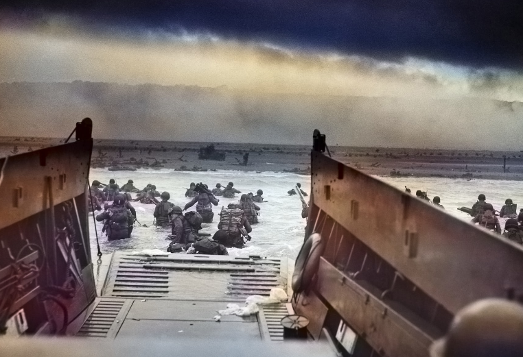Němci však ve městě a jeho okolí drželi až osm pancéřových divizí a sedm pěších divizí, a tak se stalo, že i když mělo být Caen dobyto už 6. června, protáhly se boje o město na dlouhé dva měsíce. Američané však nyní měli volné ruce a mohli se pokusit o průlom z Normandie.
Průlom
Boje probíhaly v obou sektorech velmi tvrdě. Všechny britské pokusy dobýt Caen ztroskotaly a Cherbourg padl do amerických rukou až 27. června. Na konci června bylo již v Normandii přes 875 000 spojeneckých vojáků, mnozí velitelé se však obávali, že se plánovaná operace nerozvíjí dostatečně rychle. Během druhého červencového týdne se zdálo, že došlo k patové situaci. Maršál Montgomery Dne 10. července vydal rozkaz k průlomu z Normandie.
Jednalo se o Operaci Cobra v americkém sektoru a operaci Goodwood v britském sektoru. Operace Goodwood začala 18. července. Britové však narazili na neobyčejně silný odpor u hřebenu Bourgébus. Silné deště poté útok zcela zastavily. Zdálo se, že ofenzíva ztroskotala. Ve skutečnosti Montgomeryho záměr vázat zde německé divize vyšel. Poté, co 19. července padlo město Saint-Lô, mohl i americký generál Bradley zahájit svoji ofenzívu na západě, Operaci Cobra. Ačkoliv nezačala vůbec dobře, brzy 31. července Američané dobyli město Avranches a jeho důležitý most. Nově příchozí generál Patton se svoji 3. armádou most využil a pronikl do Bretaně. Průlom z Normandie se tedy nakonec vydařil. 3. srpna se ještě Němci pokusili vrazit mezi americké armády klín v okolí města Mortain a zastavit spojenecký postup. Útok však ztroskotal a Spojenci vytrvale postupovali do vnitrozemí.
Letectvo
Spitfire F Mk.IXC
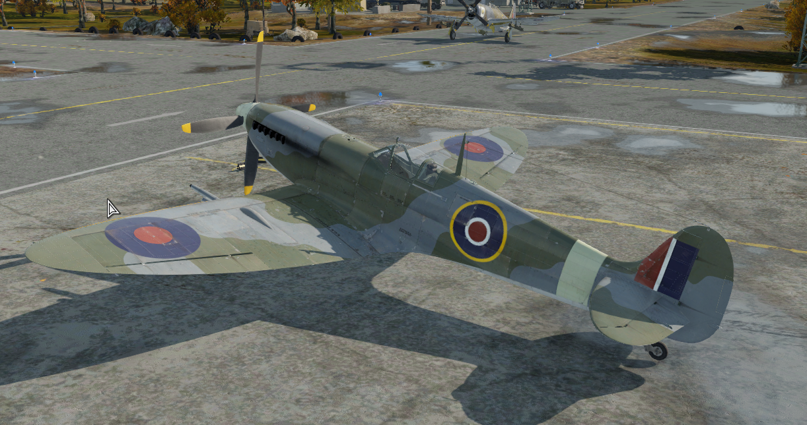
Spitfire F Mk.IXC byl jednomotorový stíhač který letěl rychlostí až 627km/h
Historie
Když probíhaly práce na variantách Mk VII a Mk VIII, byl v září 1941 testován Spitfire Mk III s novým motorem Rolls Royce 60 v naději, že bude vyvinut přechodný stíhací letoun. Celkem bylo vyrobeno 5 665 letounů Mk IX a dalších 262 letounů Mk V bylo přestavěno na Mk IX. Tato varianta, zamýšlená jako přechodné provizorium za Mk VII a Mk VIII, zůstala ve výrobě až do konce války a nakonec se stala nejmasověji vyráběnou verzí Spitfiru.
Blanheim Mk.IV
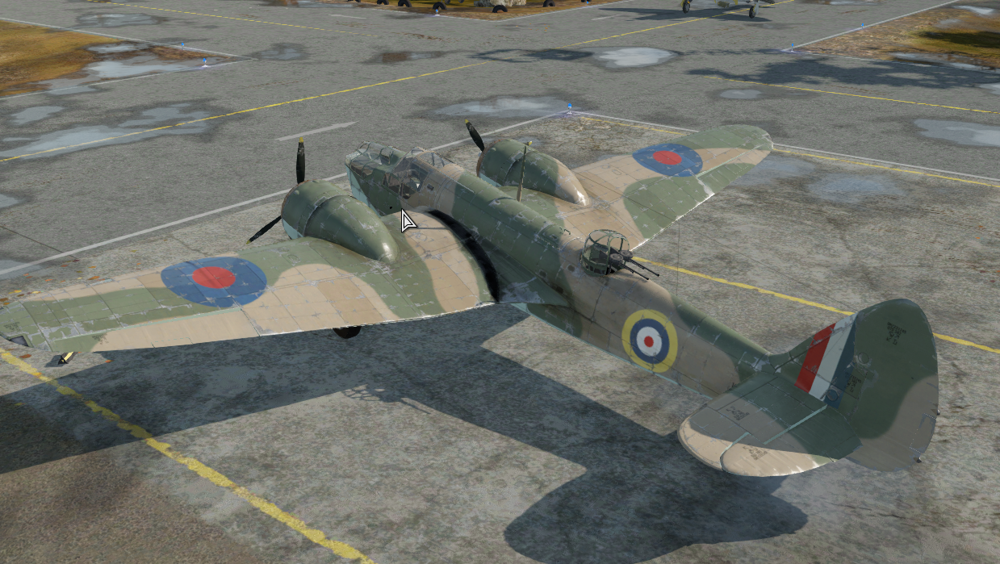
Blanheim Mk.IV byl tří posádkový bombardér který létal rychlostí až 409 km/h
Historie
Blenheim Mk IV byl důležitou součástí počátečního válečného úsilí RAF, když podnikl první misi 2. světové války a hned následující den první bombardovací nálet. V roce 1942 zastaral, protože novější letouny a technologie učinily Bristol Blenheim zastaralým.
Mosquito FB Mk.XVIII
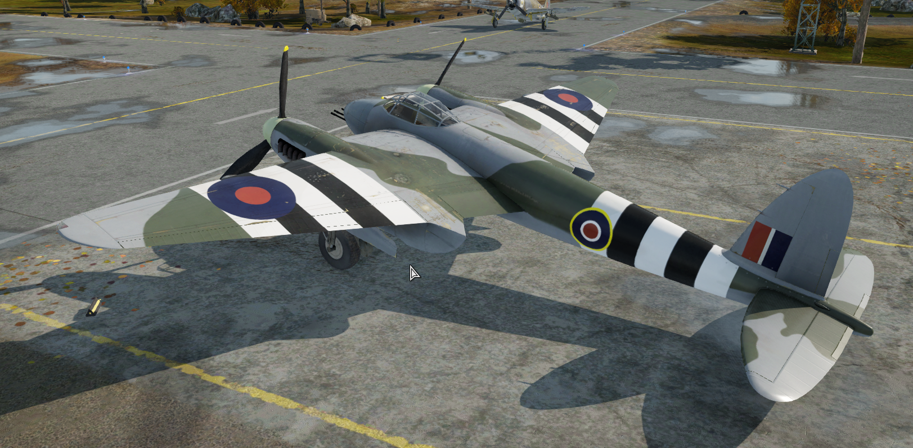
Mosquito FB Mk.XVIII byl dvouposádkový bitevník který létal rychlostí až 555 km/h
Historie
Hlavní úloha spočívala v protilodní a protiponorkové činnosti, kdy na rozkaz nebo během hlídkování útočily na lodě Osy.Systém automatického nabíjení byl však náchylný k rušení, pokud se letoun během útočného letu pohnul. V důsledku toho piloti vypálili dávku 3 až 4 nábojů, než zakroužili za dalším cílem, také proto, že riskovali, že lodě palbu opětují. Po celou dobu své služby si vedly velmi dobře; účinnost nové zbraně byla demonstrována 10. března 1944, kdy Mk XVIII z 248. perutě zasáhly německý konvoj složený z jednoho ponorkového člunu a čtyř torpédoborců, chráněný 10 letouny Ju-88.
Těžká technika
Sherman Mk.VC Firefly
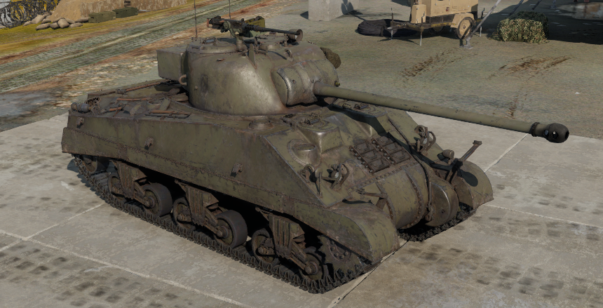
Sherman Mk.VC Firefly byl čtyřposádkový střední tank který jel rychlostí až 40km/h
Historie
Za druhé světové války byl tank M4 Sherman jedním z nejlepších tanků, které Spojenci používali. Nicméně v polovině roku 1943 začala převaha konstrukce Sherman slábnout s odhalením novějších německých tanků. Tyto tanky dokázaly nejen vyřadit Sherman na větší vzdálenost, ale dokázaly svým čelním pancířem odolat i střelám ráže 75 mm vypáleným ze Shermanu. Aby zlepšili palebnou sílu Shermanu proti těmto lepším německým tankům, rozhodli se Američané své tanky vyzbrojit lepším 76mm kanónem. Britové se však rozhodli zvýšit výzbroj jedním z nejsilnějších spojeneckých protitankových kanonů té doby, 17-pounderem.
Achiles Mk.IC
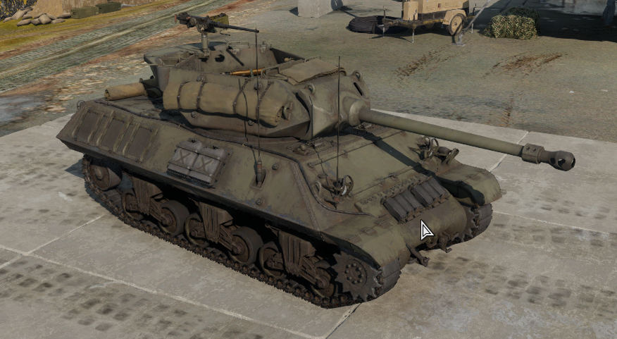
Achiles Mk.IC byl pětiposádkový stíhač tanků který jel rychlostí až 45km/h
Historie
Stíhač tanků Achiles byl vyvinut v roce 1942 pro naplnění protitankové doktríny. Na rozdíl od ostatních bojových obrněných vozidel byly stíhače tanků vyrobeny tak, aby byly umístěny v záloze a mohly čelit jakémukoli prolomení frontové linie likvidací nepřítele ze zálohy. Celkem bylo v období od září 1942 do téhož měsíce 1943 vyrobeno 6 706 tanků Achiles a jejich variant.
Churchill Mk.VII
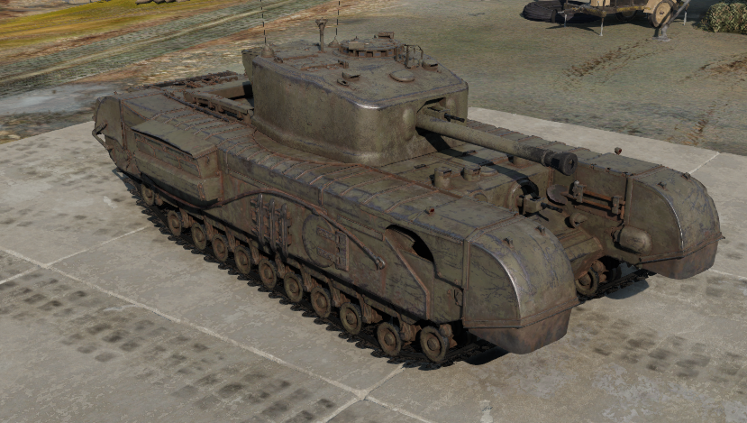
Churchill Mk.VII byl pětiposádkový težký tank který jel rychlostí až 22km/h
Historie
Churchill byl jedním z nejuniverzálnějších tanků v britské armádě, který plnil mnoho jiných specializovaných úkolů než jen roli tanku. Celkem bylo vyrobeno 7568 kusů tanků Churchill. Tank Churchill byl vyráběn v mnoha různých variantách, od obrněného transportéru, mostního plátovače, odminovače, nosiče 3palcových děl, plamenometného tanku až po obrněné vyprošťovací vozidlo.